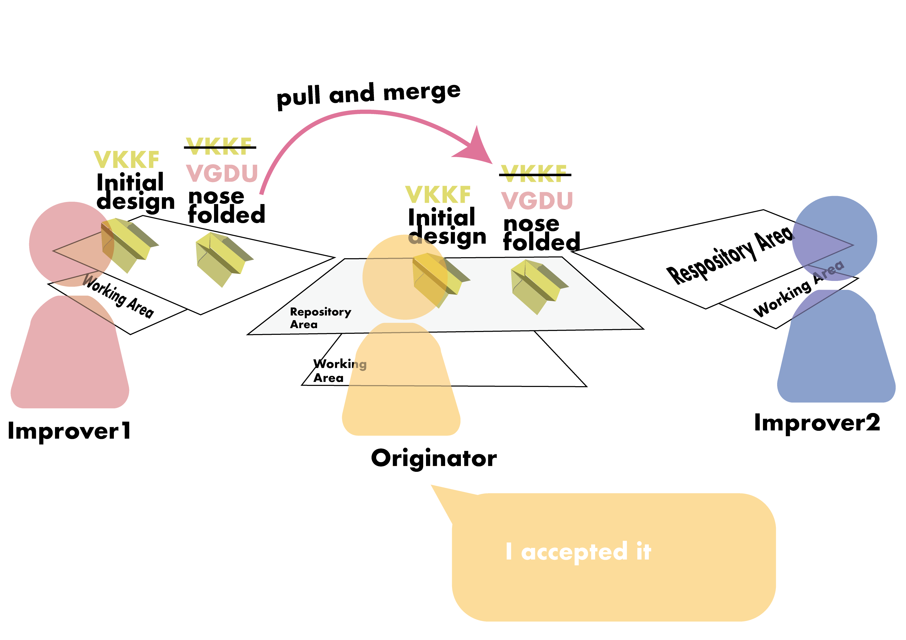
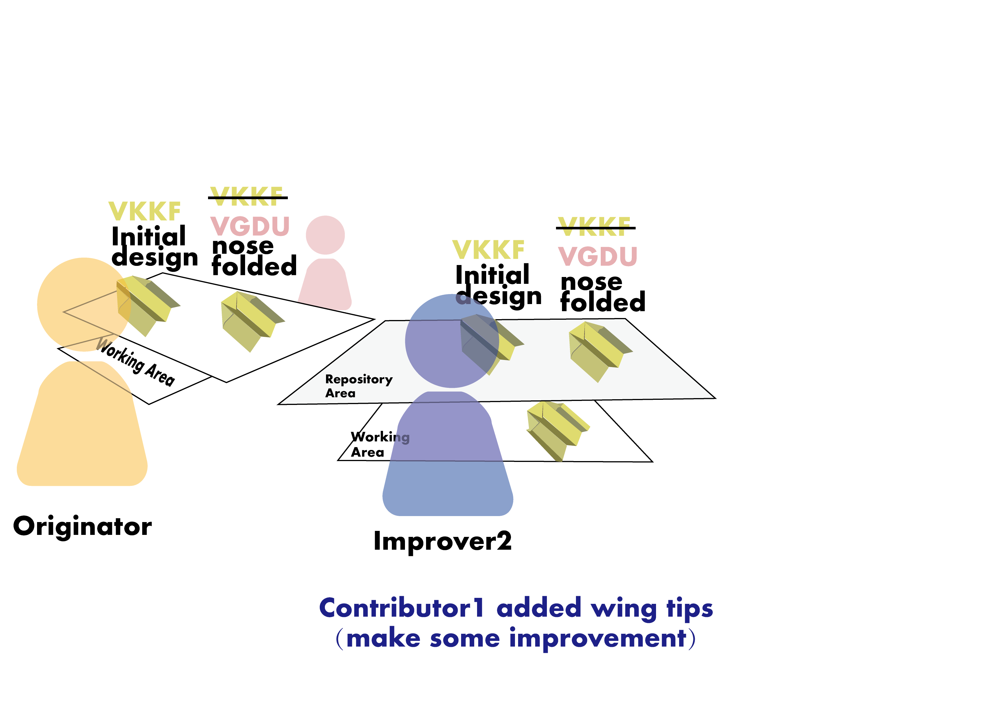
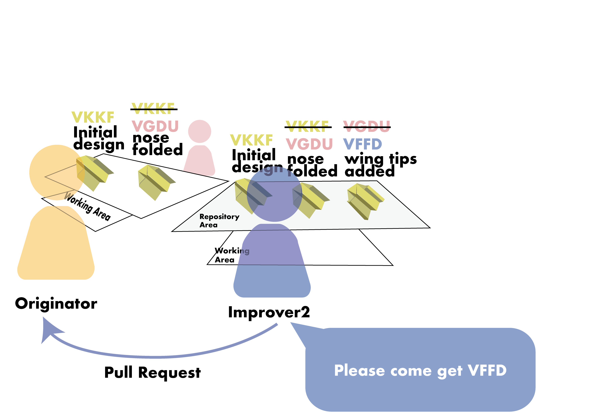
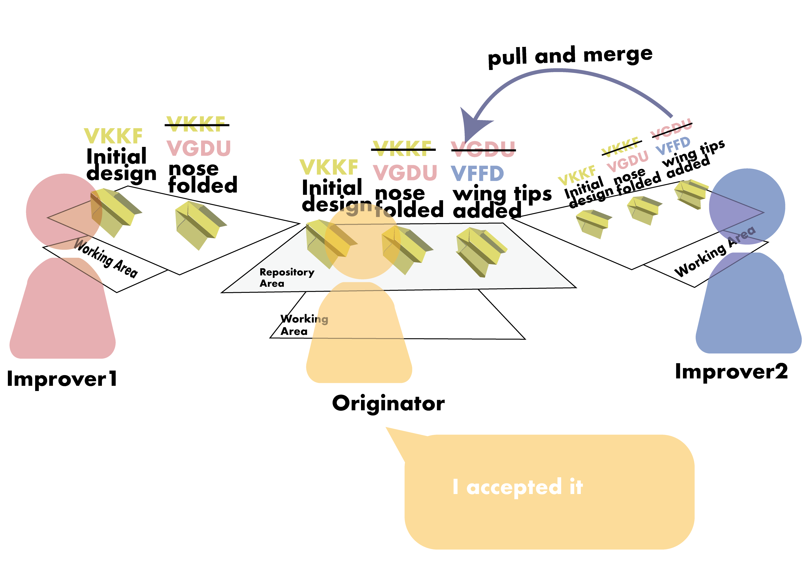

15 Paper Planes Exercise 2: Version control and collaboration
Organize into groups of 3 around a table. Figure out alphabetical order of first names. First person is Originator, Second person is Improver1, Third is Improver2.
Unlike the competitive environment from Monday, let’s assume that there is no competition between plane flyers, it’s all about the love (or if they do compete it’s not on plane designs).
Instructions flow around just for the asking.
But since they rely on each other, eventually it makes sense to have a central place to gather the improvements, a central place to bring them together.
Our proxy for work will be small paper planes, made from post-it notes. You can think of these as akin to source code files.
We will set up a table like in the image below, with two spaces for each person: their “working area” (right in front of them) and their “repository” (just further in front).
Git stores full versions of our working areas. This means all the files and folders in our source code project. Git stores full copies of work as it was. In our exercise we will use a folded piece of white paper as a proxy. Think of it like a tray on which all our work sits. We will have lots of copies of these workspaces.
In this exercise we will be making lots of copies. And that is, fundamentally, how git works. For this reason it is really important that you take the time to make the needed copies.
We will need to make a new copy of a workspace each time work moves around. As we’ll see that will happen when work moves out of a repository.
Our commit will be a creased piece of paper, with a paper plane on it, together with a name for the commit and a comment. We will write the name and comment directly on the creased piece of paper. The name we will use will be the letter V followed by three random letters. Examples could be VKKT or VGTD or VLLT. No need to worry about sequences, these are just names.
Here is an example of this exercise underway, see lots of copies of the postit planes and the white commit trays.
15.1 Sequential work
Our first scenario will be sequential work, meaning that the Originator works, then Improver1, then Improver2, but none working at the same time. 1. The originator creates a commit, with a basic plane. Mark this with a name (e.g., VKKF or VEDS) and a comment (e.g., My first attempt). Store this in front of you (in your “repository”).
Improver1 makes a copy of the whole repository (we call this a “clone”) into the space in front of them. This means making a copy of the single commit.
Improver1 does a “checkout” on that commit. This means making another copy of the commit (including the name, but not the comment) and the paper plane, as a starting point for work.
Improver1 makes an improvement to the checked out copy. Take the nose of the plane and fold it back. It should look like this:

Check this new version into your repository. Cross out the copied version name (just a single line, keep it readable) and write a new name below it (e.g.,
VGDU). That crossed out name now shows the parent. Place this commit to the right of your repository.Take a pink postit note and write on it “Please come get
VGDUand pass it to the Originator. This is your pull request. The Originator will then do a pull by looking at
VGDUin Improver1’s repository, make a copy and check it into their own repository.Improver2 will then clone the Originator’s repository. This means making a new copy of both commits and placing them in front of Improver2.
Improver2 will then do a checkout which means making another complete copy of
VGDU(which is the work as it was when Improver1 finished).Improver2 can then do new work. Fold the tips of each wing up. The plane should now look like this (see the folded nose from Improver1 and the newly folded up wing tips?):

Improver2 can then commit that work back into their repository. Cross out the existing name (
VGDU) and create a new name (e.g.,VFFD), add a comment about the work that you’ve done.Improver2 take a pink postit note, “Please come get
” (replace with the name starting with a Vthat you chose, e.g.,VFGT) Originator should pull Improver2’s work by making a full copy of Improver2’s commit, then merge it into their repository. 
Improver1 should then synchronize with the Originator by making a pull (make a full copy of the new last commit in Originator’s repo, and place it in their own repository).
Yes, that’s a lot of steps, and a lot of copies!
15.2 Parallel mergeable work
Sometimes people work at the same time, rather than in a sequence as above. We will simulate this.
Improver1 should checkout a copy of the last commit in their repo (which should be Improver2’s wing tip folds) (Yes, this means making a full new copy)
Improver2 should do the same.
Improver1 should add a design to the left wing of the plane, using a pen (maybe a star or lightening bolt)
Improver2 should add a design to the right wing of the plane, also using a pen (maybe a heart or question mark)
Both should check that work into their repository (crossing out the old
Vname and creating new randomVname and adding a comment).Both should send a pink postit to the Originator syaing “Come get my
Vname”.All work together to make a new copy of each new commit.
The Originator pulls work from Improver1 into their repository and merges it in.
Then the Originator pulls work from Improver2. This can complete automatically because the changes don’t conflict with each other; they are in different places and nothing prevents a plane from having a design on it’s left wing and on it’s right wing at the same time.
Each Improver should synchronize their repository, pulling this new commit across. Note that the parent of this commit will be different in each of their repositories (because each has their own work as the base, and then the merged work).
15.3 Parallel conflicting work
Above we saw what happens when two people work at the same time. In that case git was able to merge the work automatically. But some changes can be incompatible, and create what is called “an edit conflict”. Then we have some choices to make … and there can be social repercussions.
Both Improver1 and Improver2 should checkout a copy of the last commit they synchronized from the Originator’s repository.
Improver1 should edit the plane by unfolding the nose. Then check that commit into their repo (crossing out the parent name, creating a new one and adding a comment.)
Improver2 should edit the plane by double folding the nose. Then check that commit into their repo (crossing out the parent name, creating a new one and adding a comment.)
Both improvers should send a Pull Request using a pink postit.
The Originator should pull Improver2’s change (making a copy) and merge it into their repo (make sure the parent lines up).
Then the Originator should pull Improver1’s change (everyone helps make a copy) and place it in front of them.
The conflict exists because the nose can’t be both double folded and unfolded.
The Originator now has to make a decision. They could reject Improver1’s changes, or they could make a third completely new change and check that into the repository.
There are a few ways that projects handle this situation:
- “Benevolent Dictator”. The Originator just decides on their own.
- “Voting”. They group votes and majority rules (the Originator follows the overall wishes)
- Configuration. They make the software complex enough to have a run-time configuration setting so that everyone can determine for themselves how it will work.
- The project splits … Improver1 is upset that their change wasn’t accepted, they schism and now we have two, incompatible projects out in the world (sometimes called a “hard fork” or an “unfriendly fork”.)